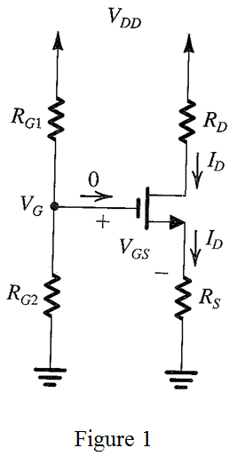

Apply voltage division to calculate the value of gate voltage.
Substitute for, for  and for
and for  .
.
Thus, the value of gate voltage,  is .
is .
Refer to Figure 5.52(c) in the textbook.
Draw the circuit diagram with notations.

Apply voltage division to calculate the value of gate voltage.
Substitute for, for and for .
Thus, the value of gate voltage, is .
Consider the expression for drain current,  .
.
The value of drain current,  is directly proportional to the value of
is directly proportional to the value of  .
.
The value of  ranges from to
ranges from to  and
and  ranges from to .
ranges from to .
Calculate the value of .
Substitute for ,  for and for .
for and for .
Calculate the value of .
Substitute for ,  for
for  and for
and for  .
.
Thus, the extreme values of drain current are .
 to limit the drain current,
to limit the drain current,  to
to  .
.
Substitute for  , for , for
, for , for  and
and  for .
for .
The standard  resistor value from Appendix G nearer to is
resistor value from Appendix G nearer to is
Thus, the value of source resistor is .
Calculate the new value of .
Substitute  for
for  , for ,
, for ,  for and
for and  for .
for .
Calculate the new value of .
Substitute for  , for
, for  , for
, for  and
and  for .
for .
Thus, the new extreme values of drain current are .